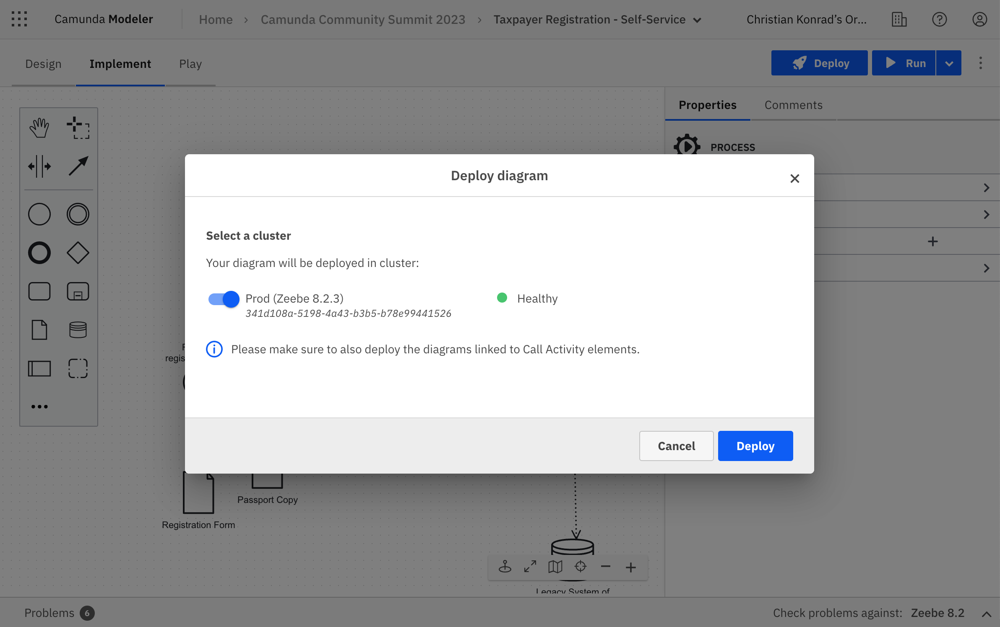
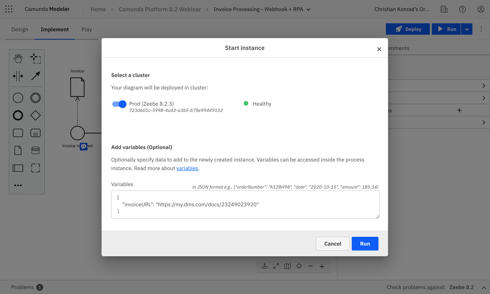
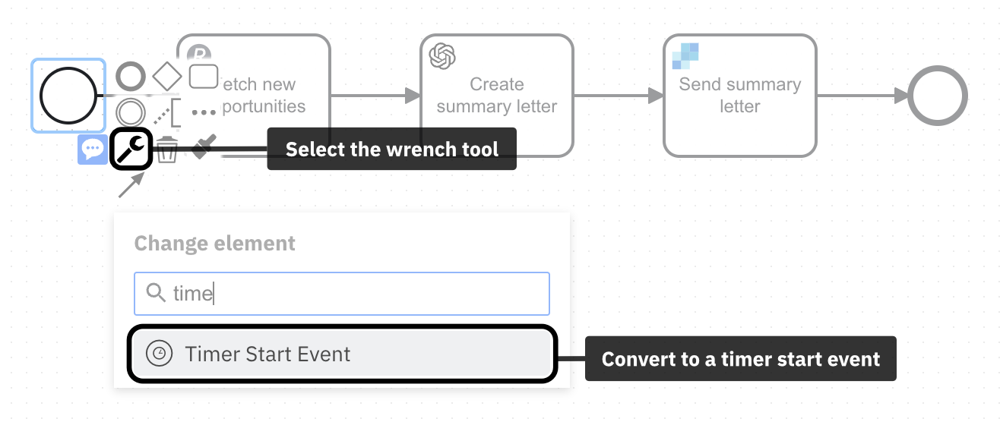
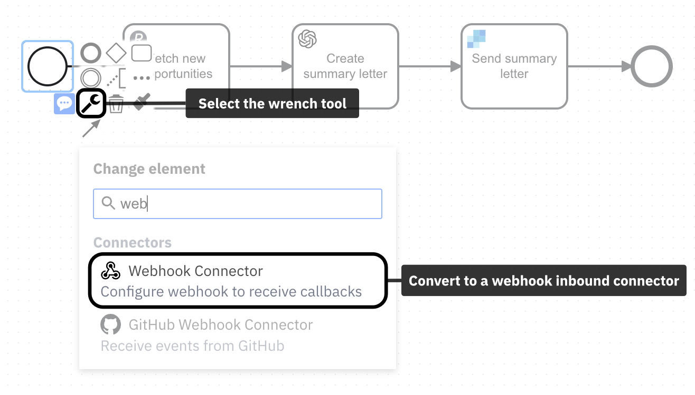
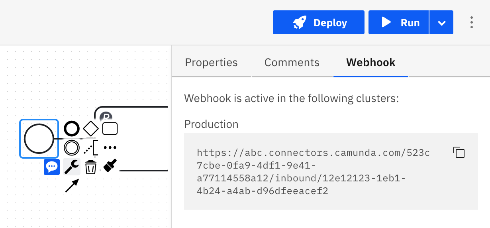
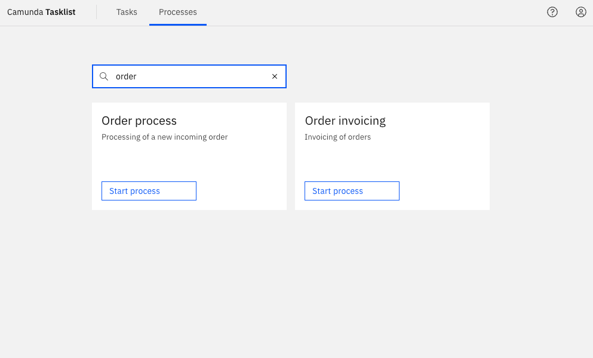
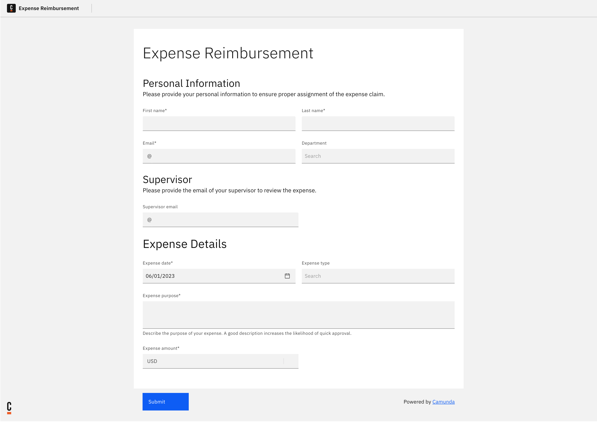
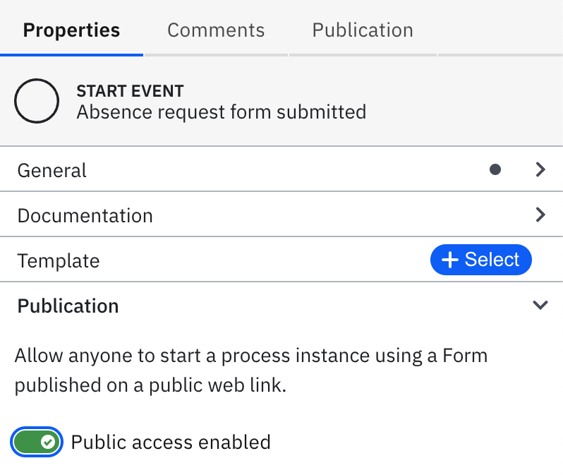
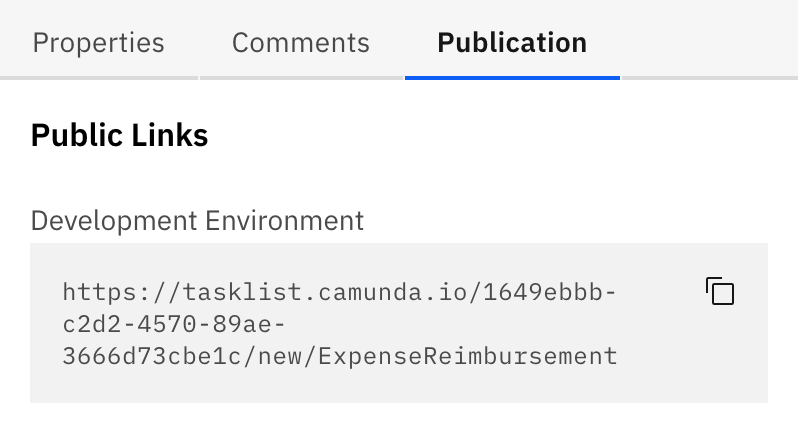

Run or publish your process
When you design a process in Camunda Modeler, you have multiple flexible options to either run or publish it on Camunda 8. This page explains the differences between running and publishing a process, and outlines the various options to publish a process into any environment, and to any audience.
Deploy a process
Web Modeler autosaves all your changes on a diagram. If you change a diagram and it is autosaved, this has no effect on deployed or running processes your cluster(s).
To make any change live in your cluster(s), you need to deploy it. If you deploy a process, it becomes available on the selected cluster and you can run or publish it.
Only organization owners or users with the Admin role in Console can deploy from Web Modeler to prod clusters.
Users without Admin roles can deploy only on dev, test, or stage clusters.
To deploy, click Deploy in the upper right corner of the modeling screen:

Before deploying a process
- Make sure your process is free of errors, otherwise it can't be deployed. Use the problems panel to detect and fix errors.
- Make sure all dependent files are deployed first, such as DMN diagrams, forms, or called processes. You can use the link tool to drill-down into linked resources and deploy them.
- Implement and run your job workers if you use tasks such as service or send tasks.
To perform any of these actions, make sure to be in Implement mode.
![Active implement mode tab]()
Run a process
Running a process means that you execute the process as a process instance on Camunda 8. It allows you to test and debug your process and observe how it performs in a live environment.
Test run using Play mode
Before you publish or run a process, you can test it manually using the Play mode. With the Play mode, you can build and test your process iteratively in small steps. To enter the Play mode, click the Play tab in the top left corner of the modeling screen. Refer to the Play mode documentation for details of how the Play environment works.
Run manually from Modeler
You can also test your process thoroughly on a development cluster to observe how it behaves in Operate and Tasklist, in order to run your job workers, and to access your running process instances programmatically. To start a process instance manually, take the following steps:
- Click Run in the top right corner of the modeling screen.

-
Select the target cluster.
-
To test your process with data, you can also specify variables written to the process context at startup. The variables must be formatted in valid JSON. As an example, you can use the following JSON:
{
"hello": "world"
}
- Click on Run to confirm. This will start a process instance on the selected cluster. If required, it (re-)deploys the process beforehand on the cluster.
After the process instance has been started, you will receive a notification with a link to the process instance view in Operate. Follow this link to observe the progress of the process instance and interact with it if required.
Starting an instance from Web Modeler deploys recent changes to the target cluster, which changes future runs of this process definition in case it has already been deployed and used. Existing process instances are not affected.
By linking a Camunda Form to a start event, process instances can be started with the form's input via a public form (SaaS only) or directly in Tasklist.
Schedule via timer
You can also schedule a process to run at a specific time or interval using timers. Timers can be added to one or multiple start events of your process.
To schedule a process using a timer, follow these steps:
- Select the start event.
- Change the start event type to a timer event using the wrench tool.

-
Configure the timer start event using the properties panel to define when the process should be executed. You can set the timer to trigger at a specific date and time or to repeat at a certain interval.
-
Click on Deploy to deploy the process.
Once the process is deployed, the timer will be activated and the process will be executed at the scheduled time or interval.
Read more in the timers documentation.
Best practices for running a process
- Use the Play mode to run a process instance with test data before running it with live data.
- Verify that the process is running as expected on a development cluster before running it with live data in your production environment.
- Use Operate to help you diagnose any problems with the process.
You can also define the success of your processes by setting key performance indicators (KPIs) for your process using Optimize.
Publishing a process
Publishing a process means that you make it available to other users inside and outside of Camunda 8. Once published, other users can access and start instances of the process.
You have the following options to publish a process:
Deploy to run programmatically
In order to be able to call a process programmatically from or inside another application or service, you simply have to deploy it. Once deployed, you can run a process via our APIs, using an API client, or via one the various community SDKs. Read the documentation on APIs & clients to learn more.
Publish via webhook
You can publish a process via webhook, which allows you to integrate it easily with any system or service that can make an HTTP request. When a webhook is triggered in another system, it sends a HTTP request to a specified URL, which starts a process instance with the payload of the request.
Follow these steps to publish a process via a webhook:
-
Select the start event.
-
Switch your start event to a HTTP webhook connector using the wrench tool.

-
Define the webhook configuration in the properties panel of the start event.
-
Finally, deploy the process to activate the webhook connector.
When the process is deployed, the webhook URL can be found in the Webhook tab of the properties panel, and called from any outside system.

You have multiple options to ensure that the webhook connection is safe for use by your target audience only. Please refer to the full documentation for configuration details.
Publish to Tasklist
Publishing a process to Tasklist makes it available to users through the web-based Tasklist application.
SaaS
To publish a process to Tasklist, you first need to deploy it. Once the process is deployed, it will automatically appear in the Tasklist application, where users can start new instances of the process.
Self-Managed
To publish a process to Tasklist, you first need to deploy it. Once the process is deployed, you need to set permissions in Identity in order to make it accessible in the Tasklist application.

To learn more about publishing processes to Tasklist, refer to our documentation on Tasklist.
Publish via a public form
Camunda 8 SaaS onlyPublishing a process via a public form allows you to share your process with external users who can start instances of the process without requiring access to Camunda 8. This feature is particularly useful when you want to gather data or initiate a process from users who are not part of your organization or do not have direct access to Camunda. It also allows you to rapidly test a process with your peers in a development environment.

To publish a process via a public form, you first need to link a Camunda Form to the process' start event, then you can follow these steps:
Deploy process to the public
- Open the Publication section in the properties panel (not the tab of the same name) and activate the toggle.

- Click Deploy to deploy the process and to activate the public form.
Once the process is deployed, a public URL for the form is generated on the target cluster.
Get the public link and share it
You can access the URL in the Publication tab of the properties panel, and share it with any user via email, social media, or any other communication channel.

When an external user accesses the public form URL, they can fill in the form fields and submit the data. Upon submission, a new process instance is automatically started in Camunda 8, using the submitted data as input.
For further configuration and how to unpublish a process again, refer to the full documentation.
Listen to message or signal events
Camunda 8 supports message and signal events, which can be used to trigger a process instance when a specific event occurs. Everyone on the platform that knows the message or signal correlation keys can call such a process. To listen to a message or signal event, you need to define a message or signal start event in your process model and configure it to listen for the desired event. Follow these steps to configure a message or signal start event:
- Select the start event.
- Change the start event type to a message or signal start event using the wrench tool.
- Configure the message or signal start event using the properties panel to define the message or signal to listen to. Using messages, you can create a 1:1 relationship between calling processes. With signals, you can create broadcast-like message distributions.
- Click on Deploy to deploy the process.
As soon as a matching event is received, a process instance will be started. To learn more about message and signal events, refer to our documentation on events.
Best practices for publishing a process
- Use the problems panel to make sure that the process free of errors before publishing it.
- Ensure the process works by testing it interactively using the Play mode.
- Use meaningful names and descriptions for the process and its elements.
- Document the process with clear instructions and details on how it should be used.
- Make sure that the process is accessible to the appropriate users only.
When working on Camunda 8 Self-Managed, you can define access permissions on a per-process level using Identity Resource Authorizations.